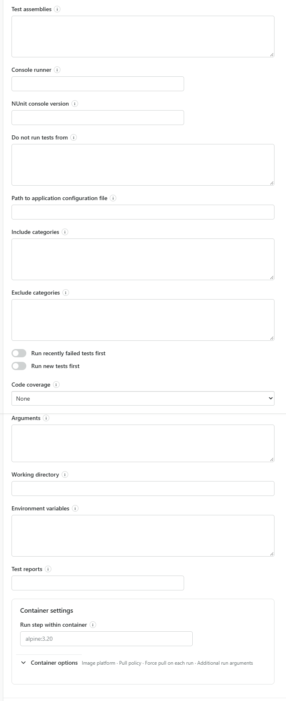

NUnit
Runs the NUnit 3 console runner on test assemblies and records the results.
When to use it
Use it to run the unit tests of your game code or tools written in C#. Results show on the build. It can run the tests that failed last time first, so you hear about them sooner, and measure code coverage.
How to set it up
- Open the build configuration and click Settings › Build Steps.
- Click Add build step. Type
NUnitin Filter step types if you like, then click the NUnit tile (group Tests). - Type a Step name, for example
Unit tests. - Fill in the fields described below.
- Optional: set Execute step, Conditions and Retry on failure. See The steps list and the step editor.
- Click Save.

Every field
| Field | What it does | Default | Example |
|---|---|---|---|
| Test assemblies | One test assembly or project per line, relative to the working directory. | Empty (required) | Tests/bin/Release/Game.Tests.dll |
| Console runner | Path of the NUnit 3 console runner. Empty takes nunit3-console from the agent's PATH. | Empty | C:\tools\nunit\nunit3-console.exe |
| NUnit console version | The agent must report this version: 3 matches any 3.x, 3.17 any 3.17.x. Empty adds none. With a console path there is no requirement. | Empty | 3.17 |
| Do not run tests from | Assemblies to leave out, one per line. * matches any characters. A match in Test assemblies is dropped before the run. | Empty | legacy/*.dll |
| Path to application configuration file | Passed as --configfile=PATH, relative to the working directory. | Empty | Tests/app.config |
| Include categories | One category per line. Only tests in one of them run. Both category lists become one --where filter, so do not add another --where to the arguments. | Empty | Fast |
| Exclude categories | One category per line. Tests in any of them do not run. A name with a quote or a backslash is refused. | Empty | Slow |
| Run recently failed tests first | Runs the tests that failed in the last build of this build configuration, with this option on, in a pass of their own, then the whole suite. Results on the build come from the whole suite, so no test counts twice. The first build with the option on runs the suite once. | Off | On |
| Run new tests first | Lists the tests with nunit3-console --explore, runs those that the last build with this option did not run in a pass of their own, then the whole suite. A step in a container runs once. | Off | Off |
| Code coverage | None, Coverlet (runs coverlet.console around the runner and reads its Cobertura report) or dotCover (runs the dotCover command line tool and reads its XML report). Neither tool is installed by the step. The report is archived and the totals show on the build page. | None | Coverlet |
| Include assemblies | Assembly name patterns, one per line, such as MyApp.*. Empty lets the tool pick. | Empty | Game.* |
| Exclude assemblies | Patterns to leave out, such as *.Tests. | Empty | *.Tests |
| Coverage tool path | Path of coverlet or dotCover. Empty uses the one on the agent's PATH. | Empty | C:\tools\coverlet.exe |
| Arguments | One argument per line, such as --where=cat==Fast. The step asks for the NUnit 3 result file itself and records the results, so Test reports is for extra files only. | Empty | --timeout=60000 |
| Working directory, Environment variables, Test reports, Run step within container | The same in every runner. See Fields every runner has. |
A worked example
Run the fast unit tests of the game code and put the failed ones first. Step name Unit tests, Test assemblies Tests/bin/Release/Game.Tests.dll, Exclude categories Slow, tick Run recently failed tests first.
What you see when it runs
The console shows $ nunit3-console …. With failed-first on, a line says Running the 2 test(s) that failed in the last build first. and then the full run. The build gets a Tests tab with passed, failed and skipped tests. A failed test makes the step unstable.
Problems and fixes
| Problem | What to do |
|---|---|
| The nunit3-console command was not found on this agent | Install the NUnit 3 console runner or set Console runner. |
| The NUnit step has no test assemblies | Fill in Test assemblies. |
| The NUnit category … holds a quote or a backslash | Rename the category. |
| No earlier build recorded failed tests for this step, so the tests run once | Normal for the first build. The option works from the next build. |
| No … coverage report was found | The tests may have stopped before the report was written. |